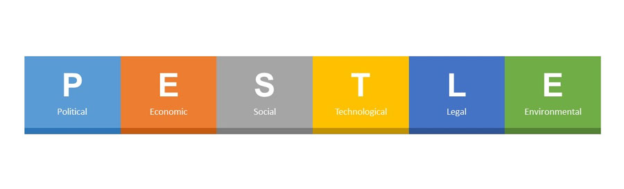

PESTLE analysis
When developing strategy and plans, it is important to evaluate and analyse the impact of all relevant external and internal factors. You may prepare a PESTLE analysis, which stands for:
P – political
E – economic
S – social
T – technological
L – legal
E – environmental
Collecting data in a logical fashion enables the review of an organisation’s vision (its main aims) and purpose (its reason for existing and operating), the internal and external influences, and what decisions are needed to be made to adapt to changes.
The table below shows the types of influences covered by a PESTLE analysis with some examples:
Possible influences include:
For example:
TO DO
Give
Give